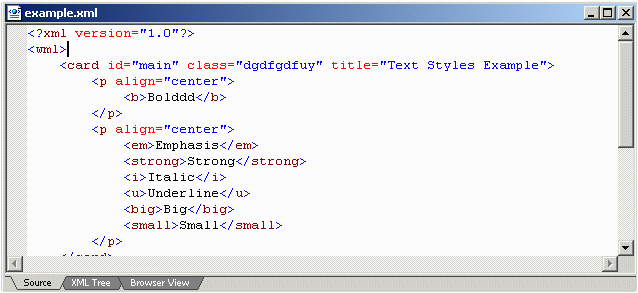

Displays the current file in ASCII (plain text) format. Some file types are supported for syntax-highlighting. Thos file types are:
XML
XSL
HTML (.html, .htm)
C++ (.cpp, .h, .c)
Below is an example of editing the code of a XML file:
